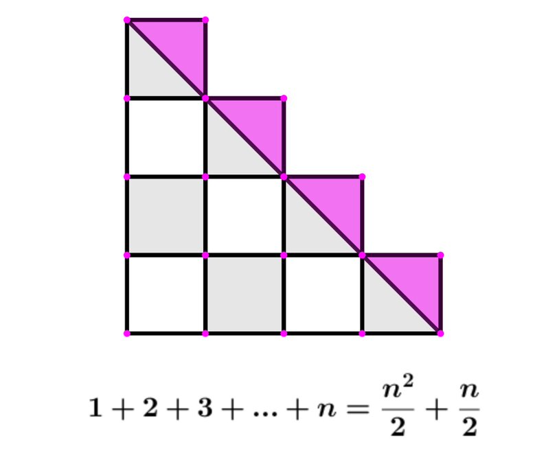
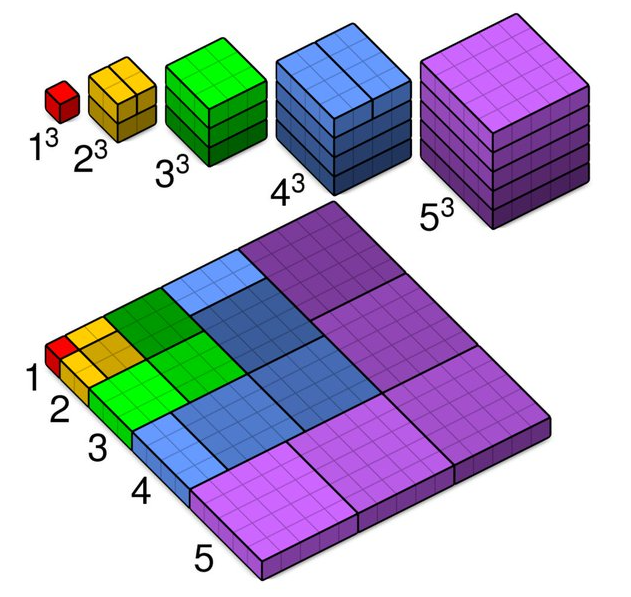

Consider the average rate of change of \(h(t)=64-16(t-1)^2\) over \([1.5,1.5+c]\).
Consider the area under \(f(x)=x^2\) defined on \([0, 4]\).
Consider the area under \(f(x)=x^2\) defined on \([0, 4]\).
Consider 4 rectangles with base width 1, and heights \(f(1), f(2), f(3), f(4)\) respectively. What are the sum of these areas?
This sum is \(R_4\).
Consider the area under \(f(x)=x^2\) defined on \([0, 4]\).
Consider 4 rectangles with base width 1, and heights \(f(0), f(1), f(2), f(3)\) respectively. What are the sum of these areas?
This sum is \(L_4\).
Do we think \(R_5, L_5\) would be better, equal or worse estimators of this area?
Do we think \(R_{10}, L_{10}\) would be better, equal or worse estimators of this area?
For what \(n\) would \(R_{n}, L_{n}\) be the best possible estimators?
Which of the following is a valid expression for \(R_n\)? (Remember that it should work with \(R_4\) which you found.)
\[\displaystyle \sum_{i=1}^n \frac{4}{n}\left(\frac{4i}{n}\right)^2 = \frac{64}{n^3}\sum_{i=1}^n i^2=\frac{64}{n^3}\frac{n(n+1)(2n+1)}{6}.\]
What is \[\lim_{n\to \infty} \frac{64}{n^3}\frac{n(n+1)(2n+1)}{6}?\] (L'Hopitals applicable but not neccesary.)
For a non-negative function \(f(x)\) the area of the function that lies under \(y=f(x)\) on \([a,b]\) is: \[A=\lim_{n\to \infty} R_n=\lim_{n\to\infty} \sum_{i=1}^n f(x_i)\Delta x\] where \(x_i=a+i\Delta x\), and \(\Delta x = \frac{b-a}{n}\)
For a non-negative function \(f(x)\) the area of the function that lies under \(y=f(x)\) on \([a,b]\) is: \[A=\lim_{n\to \infty} L_n=\lim_{n\to\infty} \sum_{i=1}^{n} f(x_i)\Delta x\] where \(x_i=a+(i-1)\Delta x\), and \(\Delta x = \frac{b-a}{n}\) \[A=\lim_{n\to \infty} M_n=\lim_{n\to\infty} \sum_{i=1}^{n} f(x_i)\Delta x\] where \(x_i=a+(i-0.5)\Delta x\), and \(\Delta x = \frac{b-a}{n}\)
Let \(f(x)=e^x\) on \([0, 5]\). Write \(R_n, L_n\)
Suppose a car's velocity over 30 seconds was measured every 5 seconds: \[ \begin{array}{|c|cccccc|} \hline \text{Time (seconds)} & 0 & 5 & 10 & 15 & 20 & 25 \\ \hline \text{Velocity (ft/sec)} &25 & 30 & 26 & 28 & 40 & 27 \\ \hline \end{array} \]
Estimate how far the car travels in the first 5 seconds. The next 5 seconds?
How can we estimate the distance the car travels over these 30 seconds?
Suppose a car's velocity over 30 seconds was measured every 5 seconds: \[ \begin{array}{|c|cccccc|} \hline \text{Time (seconds)} & 0 & 5 & 10 & 15 & 20 & 25 \\ \hline \text{Velocity (ft/sec)} &25 & 30 & 26 & 28 & 40 & 27 \\ \hline \end{array} \]
From a differential perspective, what is the connection between the time, distance and velocity?
From a geometric perspective, what is the connection between the time, distance and velocity?
If \(f(x)\) is defined on \([a,b]\), subdivide \([a,b]\) into \(n\) intervals of width \(\Delta x=\frac{b-a}{n}\). Let \(x_i^*\) be any value within each interval.
Then the integral of \(f(x)\) over \([a,b]\) with respect to \(x\) is the limit \[\int_a^bf(x)dx = \lim_{n\to\infty} \left(\sum_{i=1}^n f(x_i^*) \Delta x\right)\] provided it exists. If this limit exists, then \(f(x)\) is integrable over \([a,b]\).
\[\int_a^b cf(x)dx=c\int_a^bf(x)dx.\]
\[\lim_{n\to\infty} \left(\sum_{i=1}^n cf(x_i^*) \Delta x\right)=c\lim_{n\to\infty} \left(\sum_{i=1}^n f(x_i^*) \Delta x\right)\]
\[\int_a^b cf(x)dx=c\int_a^bf(x)dx.\]
\[\lim_{n\to\infty} \left(\sum_{i=1}^n cf(x_i^*) \Delta x\right)=c\lim_{n\to\infty} \left(\sum_{i=1}^n f(x_i^*) \Delta x\right)\]
Why is \[\int_a^b f(x)+g(x)dx=\int_a^bf(x)dx +\int_a^b g(x)dx?\]
\[\lim_{n\to\infty} \left(\sum_{i=1}^n f(x_i^*)+g(x_i^*) \Delta x\right)=\lim_{n\to\infty} \left(\sum_{i=1}^n f(x_i^*) \Delta x + \sum_{i=1}^n g(x_i^*) \Delta x\right)\]
Explain why: \[\int_a^b f(x)dx + \int_b^c f(x)dx = \int_a^cf(x)dx.\] \[\int_b^a f(x) dx= -\int_a^bf(x)dx.\]
Conisder the plot \(y=f(x)\) on \([0,4:]\)
Where region \(A\) has area 5, region \(B\) has area 1, region \(A\) has area 3.
Find: \(\int_0^4 f(x)dx, \int_1^2 f(x)dx, \int_2^0 f(x)dx, \int_0^4 |f(x)|dx. \)
\[\sum_{i=1}^n i = \frac{n(n+1)}{2}, \sum_{i=1}^n i^2 = \frac{n(n+1)(2n+1)}{6}, \sum_{i=1}^n i^3=\left( \frac{n(n+1)}{2} \right)^2\]  
Which of the following is equivalent to \(\displaystyle \int_0^5 x^3\ dx=\displaystyle \lim_{n\to \infty} \sum_{i=1}^n (x_i^*)^3\Delta x\)?
Which of the following is equivalent to \(\displaystyle \int_0^5 x^3\ dx=\displaystyle \lim_{n\to \infty} \sum_{i=1}^n (x_i^*)^3\Delta x\)?
Use \[\sum_{i=1}^n i = \frac{n(n+1)}{2}, \sum_{i=1}^n i^2 = \frac{n(n+1)(2n+1)}{6}, \sum_{i=1}^n i^3=\left( \frac{n(n+1)}{2} \right)^2\] to rewrite: \[\displaystyle \int_0^5 x^3dx = \lim_{n\to \infty} \sum_{i=1}^n \left(\frac{5i}{n}\right)^3\frac{5}{n} = \lim_{n\to \infty} \frac{5^4}{n^4} \sum_{i=1}^n i^3.\]
Write \(\displaystyle \int_0^4 x^2 dx\) as a limit \(\displaystyle \lim_{n\to \infty} \sum_{i=1}^n ???.\)
Use \[\sum_{i=1}^n i = \frac{n(n+1)}{2}, \sum_{i=1}^n i^2 = \frac{n(n+1)(2n+1)}{6}, \sum_{i=1}^n i^3=\left( \frac{n(n+1)}{2} \right)^2\] to evaluate the above limit.